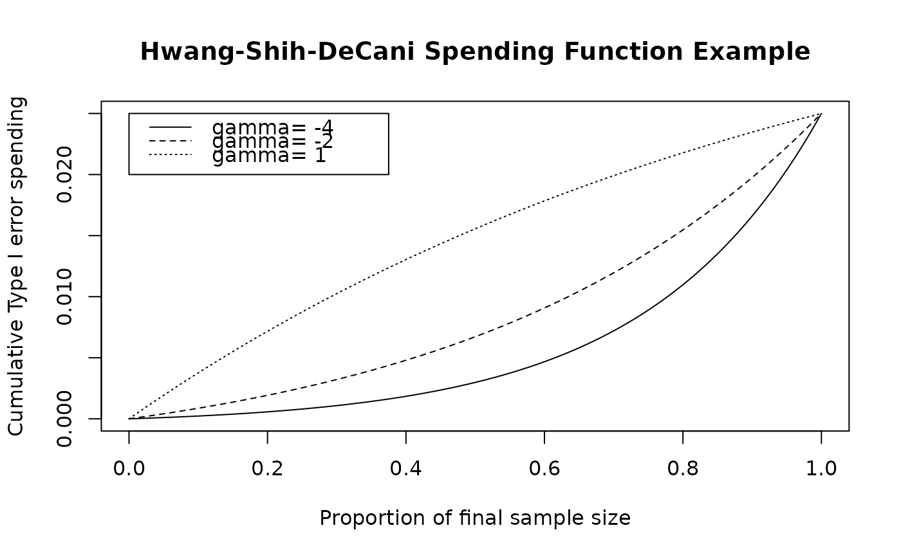

The function sfHSD implements a Hwang-Shih-DeCani spending function.
This is the default spending function for gsDesign(). Normally it
will be passed to gsDesign in the parameter sfu for the upper
bound or sfl for the lower bound to specify a spending function
family for a design. In this case, the user does not need to know the
calling sequence. The calling sequence is useful, however, when the user
wishes to plot a spending function as demonstrated below in examples.
A Hwang-Shih-DeCani spending function takes the form $$f(t;\alpha,
\gamma)=\alpha(1-e^{-\gamma t})/(1-e^{-\gamma})$$ where \(\gamma\) is the
value passed in param. A value of \(\gamma=-4\) is used
to approximate an O'Brien-Fleming design (see sfExponential
for a better fit), while a value of \(\gamma=1\) approximates a
Pocock design well.
Arguments
- alpha
Real value \(> 0\) and no more than 1. Normally,
alpha=0.025for one-sided Type I error specification oralpha=0.1for Type II error specification. However, this could be set to 1 if for descriptive purposes you wish to see the proportion of spending as a function of the proportion of sample size/information.- t
A vector of points with increasing values from 0 to 1, inclusive. Values of the proportion of sample size/information for which the spending function will be computed.
- param
A single real value specifying the gamma parameter for which Hwang-Shih-DeCani spending is to be computed; allowable range is [-40, 40]
Value
An object of type spendfn. See vignette("SpendingFunctionOverview") for further details.
Note
The gsDesign technical manual is available at https://keaven.github.io/gsd-tech-manual/.
References
Jennison C and Turnbull BW (2000), Group Sequential Methods with Applications to Clinical Trials. Boca Raton: Chapman and Hall.
Author
Keaven Anderson keaven_anderson@merck.com
Examples
library(ggplot2)
# design a 4-analysis trial using a Hwang-Shih-DeCani spending function
# for both lower and upper bounds
x <- gsDesign(k = 4, sfu = sfHSD, sfupar = -2, sfl = sfHSD, sflpar = 1)
# print the design
x
#> Asymmetric two-sided group sequential design with
#> 90 % power and 2.5 % Type I Error.
#> Upper bound spending computations assume
#> trial continues if lower bound is crossed.
#>
#> Sample
#> Size ----Lower bounds---- ----Upper bounds-----
#> Analysis Ratio* Z Nominal p Spend+ Z Nominal p Spend++
#> 1 0.324 0.03 0.5136 0.0350 2.80 0.0025 0.0025
#> 2 0.649 0.88 0.8096 0.0273 2.58 0.0049 0.0042
#> 3 0.973 1.51 0.9349 0.0212 2.34 0.0096 0.0069
#> 4 1.297 2.09 0.9817 0.0165 2.09 0.0183 0.0114
#> Total 0.1000 0.0250
#> + lower bound beta spending (under H1):
#> Hwang-Shih-DeCani spending function with gamma = 1.
#> ++ alpha spending:
#> Hwang-Shih-DeCani spending function with gamma = -2.
#> * Sample size ratio compared to fixed design with no interim
#>
#> Boundary crossing probabilities and expected sample size
#> assume any cross stops the trial
#>
#> Upper boundary (power or Type I Error)
#> Analysis
#> Theta 1 2 3 4 Total E{N}
#> 0.0000 0.0025 0.0042 0.0065 0.0072 0.0203 0.5477
#> 3.2415 0.1695 0.3553 0.2774 0.0978 0.9000 0.7533
#>
#> Lower boundary (futility or Type II Error)
#> Analysis
#> Theta 1 2 3 4 Total
#> 0.0000 0.5136 0.3156 0.1169 0.0336 0.9797
#> 3.2415 0.0350 0.0273 0.0212 0.0165 0.1000
# since sfHSD is the default for both sfu and sfl,
# this could have been written as
x <- gsDesign(k = 4, sfupar = -2, sflpar = 1)
# print again
x
#> Asymmetric two-sided group sequential design with
#> 90 % power and 2.5 % Type I Error.
#> Upper bound spending computations assume
#> trial continues if lower bound is crossed.
#>
#> Sample
#> Size ----Lower bounds---- ----Upper bounds-----
#> Analysis Ratio* Z Nominal p Spend+ Z Nominal p Spend++
#> 1 0.324 0.03 0.5136 0.0350 2.80 0.0025 0.0025
#> 2 0.649 0.88 0.8096 0.0273 2.58 0.0049 0.0042
#> 3 0.973 1.51 0.9349 0.0212 2.34 0.0096 0.0069
#> 4 1.297 2.09 0.9817 0.0165 2.09 0.0183 0.0114
#> Total 0.1000 0.0250
#> + lower bound beta spending (under H1):
#> Hwang-Shih-DeCani spending function with gamma = 1.
#> ++ alpha spending:
#> Hwang-Shih-DeCani spending function with gamma = -2.
#> * Sample size ratio compared to fixed design with no interim
#>
#> Boundary crossing probabilities and expected sample size
#> assume any cross stops the trial
#>
#> Upper boundary (power or Type I Error)
#> Analysis
#> Theta 1 2 3 4 Total E{N}
#> 0.0000 0.0025 0.0042 0.0065 0.0072 0.0203 0.5477
#> 3.2415 0.1695 0.3553 0.2774 0.0978 0.9000 0.7533
#>
#> Lower boundary (futility or Type II Error)
#> Analysis
#> Theta 1 2 3 4 Total
#> 0.0000 0.5136 0.3156 0.1169 0.0336 0.9797
#> 3.2415 0.0350 0.0273 0.0212 0.0165 0.1000
# plot the spending function using many points to obtain a smooth curve
# show default values of gamma to see how the spending function changes
# also show gamma=1 which is supposed to approximate a Pocock design
t <- 0:100 / 100
plot(t, sfHSD(0.025, t, -4)$spend,
xlab = "Proportion of final sample size",
ylab = "Cumulative Type I error spending",
main = "Hwang-Shih-DeCani Spending Function Example", type = "l"
)
lines(t, sfHSD(0.025, t, -2)$spend, lty = 2)
lines(t, sfHSD(0.025, t, 1)$spend, lty = 3)
legend(
x = c(.0, .375), y = .025 * c(.8, 1), lty = 1:3,
legend = c("gamma= -4", "gamma= -2", "gamma= 1")
)
